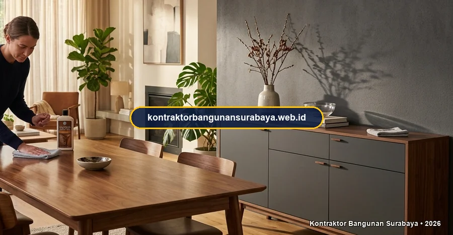

1. Cara Merawat Furnitur Kayu dan HPL Agar Awet Bertahun-tahun
Bagaimana cara merawat furnitur kayu dan HPL agar tetap awet?
Merawat furnitur kayu dan HPL agar awet bertahun-tahun melibatkan pembersihan rutin dengan bahan yang tepat, menghindari paparan sinar matahari dan kelembapan berlebih secara langsung, serta penanganan segera apabila muncul goresan atau kerusakan kecil. kontraktorbangunansurabaya.web.id membagikan tips perawatan ini agar investasi furnitur custom di rumah Anda tetap terjaga kualitasnya dalam jangka panjang.
Furnitur berbahan kayu solid maupun olahan kayu dengan lapisan High Pressure Laminate (HPL) merupakan elemen penting yang memberikan nilai estetika, kenyamanan, dan fungsi maksimal pada hunian modern. Baik itu kitchen set custom, backdrop TV, lemari pakaian built-in, maupun meja makan kayu jati, seluruh elemen interior ini membutuhkan perhatian khusus agar tekstur alaminya tidak kusam dan daya rekat laminasinya tidak mudah mengelupas.
Investasi Interior yang Terjaga
Furnitur custom dengan pengerjaan presisi dari layanan interior & finishing akan memiliki usia pakai puluhan tahun jika diimbangi dengan metode pembersihan dan pemeliharaan lingkungan yang tepat.
2. Pembersihan Rutin yang Aman untuk Permukaan Kayu dan HPL
Furnitur kayu solid sebaiknya dibersihkan dengan kain lembap yang telah diperas kering, dilanjutkan dengan lap kering, karena kelembapan berlebih yang dibiarkan terlalu lama pada permukaan kayu dapat merusak lapisan finishing dan memicu pertumbuhan jamur pada pori-pori kayu.
Penggunaan produk pembersih khusus furnitur kayu, seperti furniture polish berbahan dasar lilin alami, sesekali juga membantu menjaga kilau permukaan kayu sekaligus memberikan lapisan perlindungan tambahan terhadap debu dan kelembapan ringan sehari-hari.
| Karakteristik Perawatan | Furnitur Kayu Solid | Furnitur Laminasi HPL |
|---|---|---|
| Alat Pembersih Utama | Kain microfiber halus setengah basah lalu lap kering seketika | Kain lap microfiber lembap atau spons lembut non-abrasif |
| Cairan / Bahan Perawatan | Furniture polish beeswax alami / mineral oil khusus kayu | Air sabun lembut berkonsentrasi rendah atau cairan pembersih netral |
| Ketahanan Terhadap Cairan | Rentan jika cairan menggenang di atas sambungan urat kayu | Tahan cipratan air, namun rentan pada celah sambungan edging |
| Hal yang Wajib Dihindari | Deterjen keras, thinner, alkohol pekat, dan lap basah tergenang | Sabut kawat/baja, bubuk pembersih abrasif, dan paparan panas ekstrem |
Permukaan HPL cenderung lebih tahan terhadap kelembapan dibanding kayu solid, namun tetap perlu dihindarkan dari bahan pembersih abrasif atau cairan kimia keras, karena dapat menyebabkan permukaan laminasi tergores atau memudar warnanya seiring waktu.
Penggunaan alas atau tatakan pada permukaan meja yang sering terkena panas langsung, seperti dari peralatan masak atau setrika, juga membantu mencegah permukaan HPL menggelembung akibat panas berlebih yang terpapar dalam waktu lama.
3. Menghindari Paparan Langsung yang Mempercepat Kerusakan Furnitur
Paparan sinar matahari langsung dalam waktu lama dapat menyebabkan warna furnitur kayu memudar dan permukaan HPL mengalami perubahan warna atau bahkan mengelupas pada bagian tepi, sehingga penempatan furnitur sebaiknya mempertimbangkan arah datangnya cahaya matahari melalui jendela.

Langkah Proteksi yang Dianjurkan
- Gunakan Tirai Sheer / Vitrase: Memfilter intensitas radiasi sinar UV langsung ke arah lemari dan meja.
- Pasang Exhaust Fan Dapur: Mengalirkan uap minyak dan kelembapan saat memasak agar tidak menempel di kitchen set.
- Gunakan Bantalan Kaki Furnitur: Memasang felt pad di bawah kaki kursi dan meja agar lantai tidak baret.
- Gunakan Dehumidifier / Silica Gel: Mengontrol kelembapan di dalam lemari pakaian tertutup.
Pemicu Utama Kerusakan Furnitur
- Menempelkan ke Dinding Lembap: Memicu penyerapan air pada panel belakang multipleks/MDF.
- Menaruh Panci Panas Langsung: Melelehkan lapisan lem kontak dan membuat HPL melepuh.
- Menarik/Menggeser Furnitur Berat: Merusak struktur sambungan purus dowel dan sekrup engsel.
- Membiarkan Tumpahan Air Kering Sendiri: Meninggalkan noda bercak putih (water mark) permanen.
Kelembapan berlebih, seperti pada furnitur yang ditempatkan dekat area basah atau dapur tanpa ventilasi baik, juga mempercepat kerusakan furnitur berbahan dasar kayu olahan, sehingga sirkulasi udara yang baik di sekitar furnitur perlu diperhatikan sejak awal penempatan.
Penggunaan silica gel atau bahan penyerap kelembapan di dalam lemari tertutup, terutama pada musim hujan, juga membantu menjaga kelembapan di dalam ruang penyimpanan tetap terkendali, sehingga pakaian dan barang di dalamnya tidak lembap maupun berjamur.
4. Penanganan Kerusakan Kecil Sebelum Menjadi Masalah Besar
Goresan kecil pada permukaan kayu dapat ditangani dengan wax kayu sewarna atau minyak khusus furnitur, sementara tepi HPL yang mulai terkelupas sebaiknya segera direkatkan ulang menggunakan lem khusus agar tidak semakin melebar dan sulit diperbaiki.
Dukungan Pemeliharaan Furnitur Custom Bersama Kami:
- Material Multipleks Pilihan Berstandar: Menggunakan bahan dasar multipleks padat grade-A yang tahan rayap dan tidak mudah melengkung.
- Edging PVC Presisi dengan Mesin Otomatis: Sambungan tepi rapat dan kedap uap air untuk meminimalkan risiko pengelupasan.
- Fitting Hardware Berkualitas: Engsel soft-close dan rel laci heavy-duty bergaransi dari merk terkemuka.
- Layanan Servis & Maintenance: Penanganan cepat untuk penyetelan engsel pintu lemari dan perbaikan finishing berkala.
kontraktorbangunansurabaya.web.id menyediakan layanan perbaikan kecil untuk furnitur custom yang pernah dikerjakan, sehingga pemilik rumah tidak perlu mengganti seluruh unit furnitur hanya karena kerusakan kecil yang sebenarnya masih dapat diperbaiki dengan penanganan yang tepat.
Pemeriksaan berkala terhadap kekencangan sekrup dan engsel pada furnitur yang sering digunakan, seperti pintu lemari dan laci, juga membantu mencegah kerusakan lebih lanjut akibat komponen yang mulai kendur namun dibiarkan tanpa penanganan.
Kalkulasi Biaya Interior Custom
Perawatan furnitur ini akan lebih optimal apabila material dan konstruksinya sudah tepat sejak awal. Simak kembali panduan mengenai harga jasa interior per m2 (atau kunjungi harga jasa interior per meter) agar pemilihan material furnitur custom Anda sesuai anggaran dan kebutuhan jangka panjang.
5. FAQ Seputar Perawatan Furnitur Kayu dan HPL
6. Konsultasi Gratis Sekarang
Ingin berdiskusi lebih lanjut mengenai kebutuhan konstruksi bangunan Anda di Surabaya? Hubungi tim kami melalui WhatsApp di 0889-8964-3555 untuk konsultasi awal tanpa biaya bersama kontraktorbangunansurabaya.web.id.
Konsultasi WhatsApp di 0889-8964-3555Reza Maulana Nehru
Praktisi & Penulis Edukasi Konstruksi Bangunan di Kontraktor Bangunan Surabaya. Berfokus pada desain interior hunian modern, kalkulasi RAB finishing custom, pemilihan material kayu & HPL berkualitas, dan standarisasi mutu interior di Surabaya.